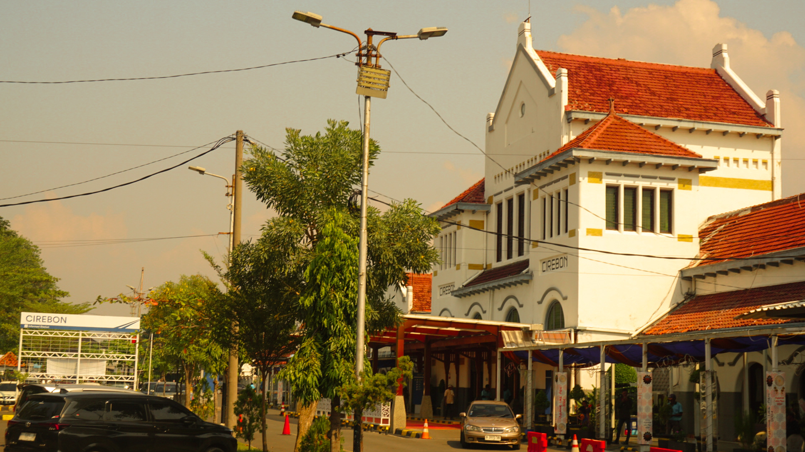

Tips Hemat Travelling: Liburan Seru Tanpa Menguras Dompet
Liburan adalah waktu yang ditunggu-tunggu untuk bersantai dan menjelajah tempat-tempat baru. Namun, seringkali biaya perjalanan bisa menjadi kendala. Jangan khawatir, dengan perencanaan yang baik dan beberapa tips hemat, Anda bisa menikmati liburan seru tanpa menguras dompet. Berikut adalah beberapa tips hemat travelling yang bisa Anda coba:
1. Rencanakan Perjalanan Jauh-Jauh Hari
Merencanakan perjalanan lebih awal memberi Anda waktu untuk mencari penawaran terbaik. Anda bisa mendapatkan tiket pesawat dan akomodasi dengan harga lebih murah jika memesan beberapa bulan sebelumnya. Selain itu, Anda juga memiliki lebih banyak waktu untuk menabung.
2. Manfaatkan Promo dan Diskon
Selalu periksa situs-situs yang menawarkan promo dan diskon untuk perjalanan. Banyak maskapai, hotel, dan situs booking online menawarkan potongan harga tertentu pada periode tertentu. Jangan ragu untuk menggunakan kode promo atau mendaftar ke newsletter mereka untuk mendapatkan informasi terkini tentang penawaran menarik.
3. Pilih Waktu Perjalanan yang Tepat
Hindari bepergian pada musim liburan atau peak season di mana harga tiket dan akomodasi bisa melonjak tinggi. Cobalah untuk bepergian di luar musim liburan atau memilih hari-hari kerja untuk mendapatkan harga yang lebih bersahabat.
4. Gunakan Transportasi Umum
Menggunakan transportasi umum seperti bus, kereta, atau metro bisa menghemat banyak biaya dibandingkan menyewa mobil atau menggunakan taksi. Selain itu, ini juga memberi Anda kesempatan untuk merasakan pengalaman lokal yang lebih autentik.
5. Cari Penginapan Alternatif
Alih-alih menginap di hotel, pertimbangkan untuk mencari penginapan alternatif seperti hostel, guesthouse, atau menyewa apartemen. Platform seperti Airbnb atau Couchsurfing bisa menjadi pilihan yang lebih ekonomis dan nyaman.
6. Masak Sendiri
Jika memungkinkan, pilih penginapan yang menyediakan fasilitas dapur. Dengan memasak sendiri, Anda bisa menghemat banyak uang dibandingkan makan di restoran setiap hari. Belanja di pasar lokal juga bisa menjadi pengalaman yang menyenangkan.
7. Cari Aktivitas Gratis
Banyak destinasi wisata yang menawarkan aktivitas gratis seperti museum, taman kota, atau pantai. Riset terlebih dahulu untuk menemukan aktivitas-aktivitas ini. Selain itu, banyak kota yang menawarkan tur berjalan kaki gratis yang dipandu oleh penduduk lokal.
8. Gunakan Kartu Diskon Wisatawan
Beberapa kota besar menawarkan kartu diskon untuk wisatawan yang memberikan akses gratis atau potongan harga untuk berbagai atraksi dan transportasi publik. Ini bisa menjadi investasi yang menguntungkan jika Anda berencana mengunjungi banyak tempat.
9. Bawa Botol Minum Sendiri
Daripada membeli air minum kemasan setiap kali haus, bawalah botol minum sendiri yang bisa diisi ulang. Banyak tempat wisata yang menyediakan fasilitas air minum gratis, dan ini juga membantu mengurangi penggunaan plastik.
10. Tetap Terkoneksi dengan Internet Murah
Alih-alih menggunakan roaming internasional yang mahal, pertimbangkan untuk membeli SIM card lokal atau menggunakan layanan WiFi portable. Ini bisa menghemat banyak biaya dan tetap membuat Anda terhubung selama perjalanan.
Dengan mengikuti tips-tips di atas, Anda bisa menikmati liburan yang menyenangkan tanpa harus khawatir tentang biaya yang membengkak. Selamat berpetualang dan selamat menikmati pengalaman baru!